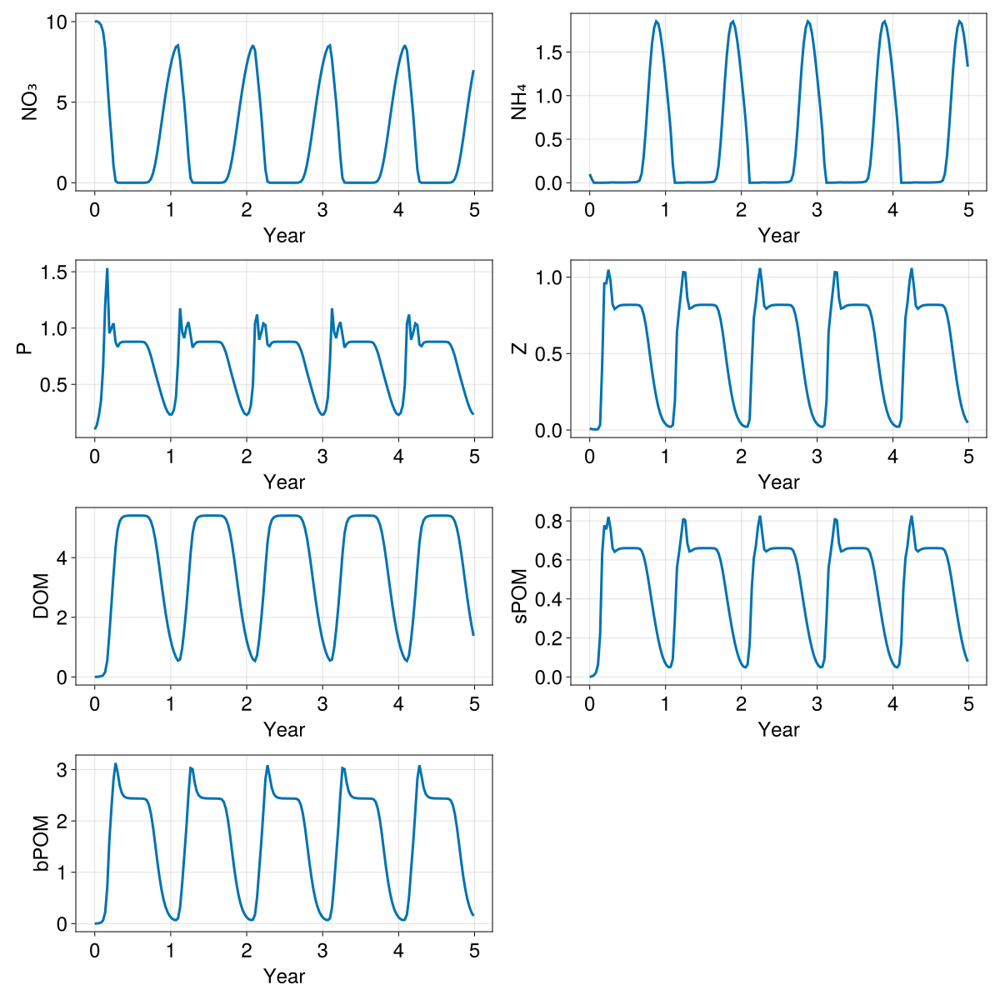

Box model
In this example we setup a LOBSTER biogeochemical model in a single box configuration. This example demonstrates:
- How to setup OceanBioME's biogeochemical models as a stand-alone box model
Install dependencies
First we check we have the dependencies installed
using Pkg
pkg"add OceanBioME"Model setup
Load the packages and setup the initial and forcing conditions
using OceanBioME, Oceananigans, Oceananigans.Units
using Oceananigans.Fields: FunctionField
const year = years = 365day
grid = BoxModelGrid()
clock = Clock(time = zero(grid))
This is forced by a prescribed time-dependent photosynthetically available radiation (PAR)
PAR⁰(t) = 60 * (1 - cos((t + 15days) * 2π / year)) * (1 / (1 + 0.2 * exp(-((mod(t, year) - 200days) / 50days)^2))) + 2
const z = -10 # specify the nominal depth of the box for the PAR profile
PAR_func(t) = PAR⁰(t) * exp(0.2z) # Modify the PAR based on the nominal depth and exponential decay
PAR = FunctionField{Center, Center, Center}(PAR_func, grid; clock)Set up the model. Here, first specify the biogeochemical model, followed by initial conditions and the start and end times
model = BoxModel(; biogeochemistry = LOBSTER(grid; light_attenuation = PrescribedPhotosyntheticallyActiveRadiation(PAR)),
clock)
set!(model, NO₃ = 10.0, NH₄ = 0.1, P = 0.1, Z = 0.01)
simulation = Simulation(model; Δt = 5minutes, stop_time = 5years)
simulation.output_writers[:fields] = JLD2Writer(model, model.fields; filename = "box.jld2", schedule = TimeInterval(10days), overwrite_existing = true)
prog(sim) = @info "$(prettytime(time(sim))) in $(prettytime(simulation.run_wall_time))"
simulation.callbacks[:progress] = Callback(prog, IterationInterval(1000000))Callback of prog on IterationInterval(1000000)Run the model (should only take a few seconds)
@info "Running the model..."
run!(simulation)[ Info: Running the model...
[ Info: Initializing simulation...
[ Info: 0 seconds in 0 seconds
┌ Warning: error ArgumentError("a group or dataset named grid is already present within this group") thrown when trying to serialize the grid at serialized/grid
└ @ Oceananigans.OutputWriters ~/.julia-oceananigans-gpu/packages/Oceananigans/9oDU5/src/OutputWriters/jld2_writer.jl:251
[ Info: ... simulation initialization complete (4.818 seconds)
[ Info: Executing initial time step...
[ Info: ... initial time step complete (273.266 ms).
[ Info: Simulation is stopping after running for 28.780 seconds.
[ Info: Simulation time 1825 days equals or exceeds stop time 1825 days.
Load the output
times = FieldTimeSeries("box.jld2", "P").times
timeseries = NamedTuple{keys(model.fields)}(FieldTimeSeries("box.jld2", "$field")[1, 1, 1, :] for field in keys(model.fields))(NO₃ = [10.0, 10.014166831970215, 9.95338249206543, 9.784919738769531, 9.375934600830078, 8.368718147277832, 6.369740009307861, 4.483834743499756, 2.825942039489746, 1.0725213289260864, 0.11781363934278488, 0.0055581084452569485, 0.000587504415307194, 0.00036966733750887215, 0.0003323778510093689, 0.00032169869518838823, 0.0003297854564152658, 0.0003561199700925499, 0.0004021570202894509, 0.0004714794922620058, 0.0005718325264751911, 0.0007220993866212666, 0.000976161623839289, 0.0015284680994227529, 0.0034679363016039133, 0.014730865135788918, 0.06833924353122711, 0.23592886328697205, 0.5924817323684692, 1.151922583580017, 1.880109190940857, 2.7274773120880127, 3.640096664428711, 4.565077304840088, 5.455395221710205, 6.273810863494873, 6.994857311248779, 7.603814125061035, 8.091344833374023, 8.437606811523438, 8.52462387084961, 7.639492988586426, 6.304966926574707, 4.981163501739502, 3.3960671424865723, 1.6185245513916016, 0.2977498173713684, 0.016796935349702835, 0.001053564832545817, 0.0004135581839364022, 0.000347712921211496, 0.00032532436307519674, 0.00032381326309405267, 0.00034076691372320056, 0.0003765812434721738, 0.0004335999255999923, 0.0005170205258764327, 0.0006387036992236972, 0.0008298614411614835, 0.0011888600420206785, 0.0021457322873175144, 0.0067142341285943985, 0.0326504148542881, 0.13230985403060913, 0.38803982734680176, 0.8483763337135315, 1.4978458881378174, 2.292231559753418, 3.1790194511413574, 4.104170799255371, 5.0171613693237305, 5.875463485717773, 6.647640228271484, 7.313953399658203, 7.863419532775879, 8.284821510314941, 8.533906936645508, 8.213061332702637, 6.9687275886535645, 5.660810947418213, 4.227956295013428, 2.5085601806640625, 0.8292788863182068, 0.07630202919244766, 0.0036856012884527445, 0.0005345595418475568, 0.00037060267641209066, 0.0003335320798214525, 0.0003222057712264359, 0.00033000216353684664, 0.00035621848655864596, 0.00040220521623268723, 0.0004715047252830118, 0.0005718466127291322, 0.00072210788493976, 0.0009761673863977194, 0.0015284732216969132, 0.0034679442178457975, 0.014730885624885559, 0.0683392882347107, 0.23592892289161682, 0.592481791973114, 1.1519227027893066, 1.880109190940857, 2.7274773120880127, 3.640096664428711, 4.565077304840088, 5.455395221710205, 6.273810863494873, 6.994857311248779, 7.603814125061035, 8.091344833374023, 8.437606811523438, 8.52462387084961, 7.639492988586426, 6.304966926574707, 4.981163501739502, 3.3960671424865723, 1.6185245513916016, 0.2977498173713684, 0.016796935349702835, 0.001053564832545817, 0.0004135581839364022, 0.000347712921211496, 0.00032532436307519674, 0.00032381326309405267, 0.00034076691372320056, 0.0003765812434721738, 0.0004335999255999923, 0.0005170205258764327, 0.0006387036992236972, 0.0008298614411614835, 0.0011888600420206785, 0.0021457322873175144, 0.0067142341285943985, 0.0326504148542881, 0.13230985403060913, 0.38803982734680176, 0.8483763337135315, 1.4978458881378174, 2.292231559753418, 3.1790194511413574, 4.104170799255371, 5.0171613693237305, 5.875463485717773, 6.647640228271484, 7.313953399658203, 7.863419532775879, 8.284821510314941, 8.533906936645508, 8.213061332702637, 6.9687275886535645, 5.660810947418213, 4.227956295013428, 2.5085601806640625, 0.8292788863182068, 0.07630202919244766, 0.0036856012884527445, 0.0005345595418475568, 0.00037060267641209066, 0.0003335320798214525, 0.0003222057712264359, 0.00033000216353684664, 0.00035621848655864596, 0.00040220521623268723, 0.0004715047252830118, 0.0005718466127291322, 0.00072210788493976, 0.0009761673863977194, 0.0015284732216969132, 0.0034679442178457975, 0.014730885624885559, 0.0683392882347107, 0.23592892289161682, 0.592481791973114, 1.1519227027893066, 1.880109190940857, 2.7274773120880127, 3.640096664428711, 4.565077304840088, 5.455395221710205, 6.273810863494873, 6.994857311248779], NH₄ = [0.10000000149011612, 0.04194540157914162, 8.133767551044002e-5, 7.401958282571286e-5, 7.232850475702435e-5, 8.322835492435843e-5, 0.00018274756439495832, 0.0007695954409427941, 0.0010923079680651426, 0.0014179995050653815, 0.002929386682808399, 0.0038767261430621147, 0.003129230812191963, 0.0027917276602238417, 0.0026443356182426214, 0.002615557285025716, 0.002697834512218833, 0.002894508419558406, 0.003216529730707407, 0.00368755916133523, 0.004361208062618971, 0.005375919863581657, 0.007144961040467024, 0.011251364834606647, 0.027046633884310722, 0.10457044094800949, 0.30624598264694214, 0.6116552352905273, 0.9702385067939758, 1.317002296447754, 1.5955051183700562, 1.7764551639556885, 1.851484775543213, 1.8260482549667358, 1.715759515762329, 1.5428969860076904, 1.3314374685287476, 1.1008371114730835, 0.8588587641716003, 0.5891490578651428, 0.20933987200260162, 0.00027609223616309464, 0.0006170746055431664, 0.0009813999058678746, 0.001119939610362053, 0.0013798309955745935, 0.002326764864847064, 0.004281843546777964, 0.003472784534096718, 0.0029475742485374212, 0.0027137345168739557, 0.0026211440563201904, 0.002644911641255021, 0.002782341092824936, 0.0030392215121537447, 0.003431344637647271, 0.003993630409240723, 0.004810753278434277, 0.006116825621575117, 0.008686344139277935, 0.016154680401086807, 0.0525442436337471, 0.18969450891017914, 0.44885581731796265, 0.7881119847297668, 1.149231195449829, 1.4672253131866455, 1.6990792751312256, 1.8271422386169434, 1.8505516052246094, 1.780224323272705, 1.6356221437454224, 1.4405925273895264, 1.2176735401153564, 0.9814950823783875, 0.7301158905029297, 0.423829048871994, 0.00028916544397361577, 0.0003827677574008703, 0.0008516921079717577, 0.0010495291789993644, 0.0012221398064866662, 0.0016679741675034165, 0.0035659417044371367, 0.003943460527807474, 0.0031529790721833706, 0.0028090274427086115, 0.0026522912085056305, 0.002618869300931692, 0.002699249191209674, 0.0028951503336429596, 0.0032168396282941103, 0.003687717951834202, 0.004361294209957123, 0.005375970620661974, 0.007144995499402285, 0.011251396499574184, 0.02704668790102005, 0.10457054525613785, 0.3062460720539093, 0.6116552948951721, 0.9702385067939758, 1.317002296447754, 1.5955051183700562, 1.776455044746399, 1.851484775543213, 1.8260482549667358, 1.715759515762329, 1.5428969860076904, 1.3314374685287476, 1.1008371114730835, 0.8588587045669556, 0.5891490578651428, 0.20933987200260162, 0.00027609223616309464, 0.0006170746055431664, 0.0009813999058678746, 0.001119939610362053, 0.0013798309955745935, 0.002326764864847064, 0.004281843546777964, 0.003472784534096718, 0.0029475742485374212, 0.0027137345168739557, 0.0026211440563201904, 0.002644911641255021, 0.002782341092824936, 0.0030392215121537447, 0.003431344637647271, 0.003993630409240723, 0.004810753278434277, 0.006116825621575117, 0.008686344139277935, 0.016154680401086807, 0.0525442436337471, 0.18969450891017914, 0.44885581731796265, 0.7881119847297668, 1.149231195449829, 1.4672253131866455, 1.6990792751312256, 1.8271422386169434, 1.8505516052246094, 1.780224323272705, 1.6356221437454224, 1.4405925273895264, 1.2176735401153564, 0.9814950823783875, 0.7301158905029297, 0.423829048871994, 0.00028916544397361577, 0.0003827677574008703, 0.0008516921079717577, 0.0010495291789993644, 0.0012221398064866662, 0.0016679741675034165, 0.0035659417044371367, 0.003943460527807474, 0.0031529790721833706, 0.0028090274427086115, 0.0026522912085056305, 0.002618869300931692, 0.002699249191209674, 0.0028951503336429596, 0.0032168396282941103, 0.003687717951834202, 0.004361294209957123, 0.005375970620661974, 0.007144995499402285, 0.011251396499574184, 0.02704668790102005, 0.10457054525613785, 0.3062460720539093, 0.6116552948951721, 0.9702385067939758, 1.317002296447754, 1.5955051183700562, 1.776455044746399, 1.851484775543213, 1.8260482549667358, 1.715759515762329, 1.5428969860076904, 1.3314374685287476], P = [0.10000000149011612, 0.13825155794620514, 0.22488467395305634, 0.35468339920043945, 0.6453597545623779, 1.2061160802841187, 1.5328319072723389, 0.9536393880844116, 0.9989610910415649, 1.0429658889770508, 0.8746936917304993, 0.8323485851287842, 0.8652432560920715, 0.8762106895446777, 0.8782501220703125, 0.8786290884017944, 0.8787204027175903, 0.8787367939949036, 0.878720760345459, 0.8786831498146057, 0.8786198496818542, 0.8785046935081482, 0.8782423734664917, 0.8773910999298096, 0.8727636933326721, 0.8501235842704773, 0.8079495429992676, 0.7509982585906982, 0.6797672510147095, 0.6084873080253601, 0.5408847332000732, 0.4744795858860016, 0.4092559814453125, 0.3478931784629822, 0.29468628764152527, 0.25449293851852417, 0.23208877444267273, 0.23350092768669128, 0.27156949043273926, 0.3826691210269928, 0.7034675478935242, 1.176410436630249, 0.9655779600143433, 0.9104355573654175, 1.0060688257217407, 1.0537117719650269, 0.9427688717842102, 0.826947808265686, 0.8567616939544678, 0.8742203712463379, 0.8779084086418152, 0.8785631060600281, 0.8787071704864502, 0.8787410259246826, 0.8787346482276917, 0.8787057399749756, 0.8786560297012329, 0.8785722255706787, 0.8784042000770569, 0.8779571652412415, 0.8760946393013, 0.8647181987762451, 0.8305814862251282, 0.7817720770835876, 0.7162585258483887, 0.6435673832893372, 0.5744022130966187, 0.507610559463501, 0.4416021704673767, 0.3778495788574219, 0.31996724009513855, 0.2726638913154602, 0.24075725674629211, 0.2292841672897339, 0.2465764433145523, 0.31375372409820557, 0.49723806977272034, 1.0414211750030518, 1.12074613571167, 0.8960990905761719, 0.9578607082366943, 1.0410304069519043, 1.0264546871185303, 0.8539779782295227, 0.8392219543457031, 0.8683493137359619, 0.8768219351768494, 0.8783627152442932, 0.8786587119102478, 0.8787313103675842, 0.8787412047386169, 0.878722608089447, 0.878683865070343, 0.8786201477050781, 0.8785048127174377, 0.8782424330711365, 0.8773910999298096, 0.8727636933326721, 0.8501235842704773, 0.8079495429992676, 0.7509982585906982, 0.6797672510147095, 0.6084873080253601, 0.5408847332000732, 0.4744795858860016, 0.4092559814453125, 0.3478931784629822, 0.29468628764152527, 0.25449293851852417, 0.23208877444267273, 0.23350092768669128, 0.27156949043273926, 0.3826691210269928, 0.7034675478935242, 1.176410436630249, 0.9655779600143433, 0.9104355573654175, 1.0060688257217407, 1.0537117719650269, 0.9427688717842102, 0.826947808265686, 0.8567616939544678, 0.8742203712463379, 0.8779084086418152, 0.8785631060600281, 0.8787071704864502, 0.8787410259246826, 0.8787346482276917, 0.8787057399749756, 0.8786560297012329, 0.8785722255706787, 0.8784042000770569, 0.8779571652412415, 0.8760946393013, 0.8647181987762451, 0.8305814862251282, 0.7817720770835876, 0.7162585258483887, 0.6435673832893372, 0.5744022130966187, 0.507610559463501, 0.4416021704673767, 0.3778495788574219, 0.31996724009513855, 0.2726638913154602, 0.24075725674629211, 0.2292841672897339, 0.2465764433145523, 0.31375372409820557, 0.49723806977272034, 1.0414211750030518, 1.12074613571167, 0.8960990905761719, 0.9578607082366943, 1.0410304069519043, 1.0264546871185303, 0.8539779782295227, 0.8392219543457031, 0.8683493137359619, 0.8768219351768494, 0.8783627152442932, 0.8786587119102478, 0.8787313103675842, 0.8787412047386169, 0.878722608089447, 0.878683865070343, 0.8786201477050781, 0.8785048127174377, 0.8782424330711365, 0.8773910999298096, 0.8727636933326721, 0.8501235842704773, 0.8079495429992676, 0.7509982585906982, 0.6797672510147095, 0.6084873080253601, 0.5408847332000732, 0.4744795858860016, 0.4092559814453125, 0.3478931784629822, 0.29468628764152527, 0.25449293851852417, 0.23208877444267273], Z = [0.009999999776482582, 0.006412610877305269, 0.004561243578791618, 0.004005309194326401, 0.006188844330608845, 0.03276634216308594, 0.4277355372905731, 0.959199070930481, 0.9595770239830017, 1.048558235168457, 0.9754186868667603, 0.8212482333183289, 0.7911020517349243, 0.8021342158317566, 0.8115662336349487, 0.8160010576248169, 0.8178223967552185, 0.8185325860977173, 0.8187864422798157, 0.8188466429710388, 0.8188112378120422, 0.8186987042427063, 0.8184505105018616, 0.8177726864814758, 0.8148176074028015, 0.7986699342727661, 0.7546164989471436, 0.6850565671920776, 0.5919004678726196, 0.4877372086048126, 0.3870600759983063, 0.2960125505924225, 0.21745221316814423, 0.15352143347263336, 0.10492753237485886, 0.07037336379289627, 0.04715777933597565, 0.03234283626079559, 0.023716531693935394, 0.020857175812125206, 0.03237104415893555, 0.18766647577285767, 0.6400380730628967, 0.7803742289543152, 0.9035436511039734, 1.0329017639160156, 1.0304324626922607, 0.8620101809501648, 0.794228732585907, 0.7986177802085876, 0.8093396425247192, 0.8150207996368408, 0.8174312114715576, 0.8183879256248474, 0.8187450766563416, 0.8188525438308716, 0.8188464641571045, 0.8187692165374756, 0.8186015486717224, 0.8182079792022705, 0.8168887495994568, 0.8096956014633179, 0.7801280617713928, 0.7229434847831726, 0.6409692168235779, 0.5400816798210144, 0.43643057346343994, 0.3401343822479248, 0.25501748919487, 0.18356794118881226, 0.12734326720237732, 0.0860448032617569, 0.057539522647857666, 0.0388643853366375, 0.027344834059476852, 0.021453779190778732, 0.023061111569404602, 0.07001131772994995, 0.4243687689304352, 0.733417809009552, 0.8346640467643738, 0.9748996496200562, 1.059205412864685, 0.9471662044525146, 0.8121467232704163, 0.793386697769165, 0.8045464158058167, 0.8127453923225403, 0.816493809223175, 0.8180209994316101, 0.818612277507782, 0.8188184499740601, 0.8188595175743103, 0.8188164234161377, 0.8187007904052734, 0.8184513449668884, 0.8177730441093445, 0.8148177862167358, 0.7986699938774109, 0.7546164989471436, 0.6850565671920776, 0.5919004678726196, 0.4877372086048126, 0.3870600759983063, 0.2960125505924225, 0.21745221316814423, 0.15352143347263336, 0.10492753237485886, 0.07037336379289627, 0.04715777933597565, 0.03234283626079559, 0.023716531693935394, 0.020857175812125206, 0.03237104415893555, 0.18766647577285767, 0.6400380730628967, 0.7803742289543152, 0.9035436511039734, 1.0329017639160156, 1.0304324626922607, 0.8620101809501648, 0.794228732585907, 0.7986177802085876, 0.8093396425247192, 0.8150207996368408, 0.8174312114715576, 0.8183879256248474, 0.8187450766563416, 0.8188525438308716, 0.8188464641571045, 0.8187692165374756, 0.8186015486717224, 0.8182079792022705, 0.8168887495994568, 0.8096956014633179, 0.7801280617713928, 0.7229434847831726, 0.6409692168235779, 0.5400816798210144, 0.43643057346343994, 0.3401343822479248, 0.25501748919487, 0.18356794118881226, 0.12734326720237732, 0.0860448032617569, 0.057539522647857666, 0.0388643853366375, 0.027344834059476852, 0.021453779190778732, 0.023061111569404602, 0.07001131772994995, 0.4243687689304352, 0.733417809009552, 0.8346640467643738, 0.9748996496200562, 1.059205412864685, 0.9471662044525146, 0.8121467232704163, 0.793386697769165, 0.8045464158058167, 0.8127453923225403, 0.816493809223175, 0.8180209994316101, 0.818612277507782, 0.8188184499740601, 0.8188595175743103, 0.8188164234161377, 0.8187007904052734, 0.8184513449668884, 0.8177730441093445, 0.8148177862167358, 0.7986699938774109, 0.7546164989471436, 0.6850565671920776, 0.5919004678726196, 0.4877372086048126, 0.3870600759983063, 0.2960125505924225, 0.21745221316814423, 0.15352143347263336, 0.10492753237485886, 0.07037336379289627, 0.04715777933597565], DOM = [0.0, 0.0034760613925755024, 0.009572316892445087, 0.022427663207054138, 0.055918361991643906, 0.166078120470047, 0.5471736192703247, 1.424518346786499, 2.42681884765625, 3.423647880554199, 4.3509063720703125, 4.947904109954834, 5.223135471343994, 5.335912704467773, 5.381250858306885, 5.399510383605957, 5.406862258911133, 5.409780979156494, 5.410868167877197, 5.411165237426758, 5.4110798835754395, 5.410747528076172, 5.410143852233887, 5.408998489379883, 5.405972003936768, 5.392918586730957, 5.342068195343018, 5.216207027435303, 4.986253261566162, 4.641335964202881, 4.198659896850586, 3.693665027618408, 3.1651391983032227, 2.6473052501678467, 2.166552782058716, 1.740179419517517, 1.3766443729400635, 1.0772863626480103, 0.8391740918159485, 0.6593727469444275, 0.5467174053192139, 0.5884106159210205, 0.9609969854354858, 1.5876069068908691, 2.3243019580841064, 3.1871237754821777, 4.1068434715271, 4.806818962097168, 5.1618266105651855, 5.311075687408447, 5.371241569519043, 5.395464897155762, 5.40523624420166, 5.409152507781982, 5.410665035247803, 5.411160945892334, 5.411190032958984, 5.410955429077148, 5.41049337387085, 5.409677505493164, 5.407924175262451, 5.401893138885498, 5.374645709991455, 5.290585517883301, 5.115542888641357, 4.8277201652526855, 4.430224895477295, 3.9514803886413574, 3.4300460815429688, 2.9030308723449707, 2.4009950160980225, 1.945846438407898, 1.55033540725708, 1.2190662622451782, 0.9508257508277893, 0.7419782876968384, 0.5927150845527649, 0.5365424156188965, 0.7280613780021667, 1.2575788497924805, 1.941922664642334, 2.739807367324829, 3.6531362533569336, 4.502294063568115, 5.020298480987549, 5.253020763397217, 5.34789514541626, 5.386056423187256, 5.40144157409668, 5.407639026641846, 5.410093784332275, 5.410994052886963, 5.411215782165527, 5.411100387573242, 5.4107561111450195, 5.410147190093994, 5.408999443054199, 5.405972480773926, 5.392918586730957, 5.342068195343018, 5.216207027435303, 4.986253261566162, 4.641335964202881, 4.198659420013428, 3.693664789199829, 3.1651391983032227, 2.6473052501678467, 2.166552782058716, 1.740179419517517, 1.3766443729400635, 1.0772863626480103, 0.8391740918159485, 0.6593726873397827, 0.5467174053192139, 0.5884106159210205, 0.9609969854354858, 1.5876069068908691, 2.3243019580841064, 3.1871237754821777, 4.1068434715271, 4.806818962097168, 5.1618266105651855, 5.311075687408447, 5.371241569519043, 5.395464897155762, 5.40523624420166, 5.409152507781982, 5.410665035247803, 5.411160945892334, 5.411190032958984, 5.410955429077148, 5.41049337387085, 5.409677505493164, 5.407924175262451, 5.401893138885498, 5.374645709991455, 5.290585517883301, 5.115542888641357, 4.8277201652526855, 4.430224895477295, 3.9514803886413574, 3.4300460815429688, 2.9030308723449707, 2.4009950160980225, 1.945846438407898, 1.55033540725708, 1.2190662622451782, 0.9508257508277893, 0.7419782876968384, 0.5927150845527649, 0.5365424156188965, 0.7280613780021667, 1.2575788497924805, 1.941922664642334, 2.739807367324829, 3.6531362533569336, 4.502294063568115, 5.020298480987549, 5.253020763397217, 5.34789514541626, 5.386056423187256, 5.40144157409668, 5.407639026641846, 5.410093784332275, 5.410994052886963, 5.411215782165527, 5.411100387573242, 5.4107561111450195, 5.410147190093994, 5.408999443054199, 5.405972480773926, 5.392918586730957, 5.342068195343018, 5.216207027435303, 4.986253261566162, 4.641335964202881, 4.198659420013428, 3.693664789199829, 3.1651391983032227, 2.6473052501678467, 2.166552782058716, 1.740179419517517, 1.3766443729400635], sPOM = [0.0, 0.0028735811356455088, 0.008758295327425003, 0.021942241117358208, 0.06324239075183868, 0.21762506663799286, 0.6324074268341064, 0.7766551971435547, 0.75691819190979, 0.8208649754524231, 0.7618895769119263, 0.6599416732788086, 0.6418043971061707, 0.6494186520576477, 0.6556739211082458, 0.6585795879364014, 0.6597663164138794, 0.6602278351783752, 0.6603921055793762, 0.6604301333427429, 0.6604054570198059, 0.6603295803070068, 0.6601624488830566, 0.6597046852111816, 0.6577015519142151, 0.6468163132667542, 0.6176515817642212, 0.5723558664321899, 0.5121839046478271, 0.4441010355949402, 0.37566888332366943, 0.3097764253616333, 0.247964546084404, 0.19223880767822266, 0.14471007883548737, 0.10673409700393677, 0.07850629836320877, 0.059458497911691666, 0.04947592690587044, 0.05211730673909187, 0.09165354073047638, 0.30054399371147156, 0.5605563521385193, 0.6363883018493652, 0.7201508283615112, 0.8108763694763184, 0.8025421500205994, 0.68570876121521, 0.6435328722000122, 0.6470375657081604, 0.654204249382019, 0.6579389572143555, 0.6595118045806885, 0.6601340770721436, 0.660365641117096, 0.6604345440864563, 0.6604292392730713, 0.660377025604248, 0.6602641344070435, 0.6599987745285034, 0.6591060757637024, 0.6542335152626038, 0.6344674825668335, 0.596951425075531, 0.5438686609268188, 0.478534460067749, 0.4096720516681671, 0.3423141539096832, 0.2782474458217621, 0.21920080482959747, 0.16733892261981964, 0.12448927760124207, 0.09142929315567017, 0.06787366420030594, 0.05326570197939873, 0.04863870516419411, 0.06329048424959183, 0.16971062123775482, 0.4509584307670593, 0.6086129546165466, 0.6724976897239685, 0.770301878452301, 0.827349066734314, 0.7420419454574585, 0.6543901562690735, 0.6434022784233093, 0.6510224342346191, 0.6564477682113647, 0.6589009761810303, 0.6598955988883972, 0.6602796316146851, 0.6604129076004028, 0.6604384779930115, 0.6604088544845581, 0.6603309512138367, 0.6601629853248596, 0.659704864025116, 0.6577016115188599, 0.6468163132667542, 0.6176515817642212, 0.5723558664321899, 0.5121839046478271, 0.4441010355949402, 0.37566888332366943, 0.3097764253616333, 0.247964546084404, 0.19223880767822266, 0.14471007883548737, 0.10673409700393677, 0.07850629836320877, 0.059458497911691666, 0.04947592690587044, 0.05211730673909187, 0.09165354073047638, 0.30054399371147156, 0.5605563521385193, 0.6363883018493652, 0.7201508283615112, 0.8108763694763184, 0.8025421500205994, 0.68570876121521, 0.6435328722000122, 0.6470375657081604, 0.654204249382019, 0.6579389572143555, 0.6595118045806885, 0.6601340770721436, 0.660365641117096, 0.6604345440864563, 0.6604292392730713, 0.660377025604248, 0.6602641344070435, 0.6599987745285034, 0.6591060757637024, 0.6542335152626038, 0.6344674825668335, 0.596951425075531, 0.5438686609268188, 0.478534460067749, 0.4096720516681671, 0.3423141539096832, 0.2782474458217621, 0.21920080482959747, 0.16733892261981964, 0.12448927760124207, 0.09142929315567017, 0.06787366420030594, 0.05326570197939873, 0.04863870516419411, 0.06329048424959183, 0.16971062123775482, 0.4509584307670593, 0.6086129546165466, 0.6724976897239685, 0.770301878452301, 0.827349066734314, 0.7420419454574585, 0.6543901562690735, 0.6434022784233093, 0.6510224342346191, 0.6564477682113647, 0.6589009761810303, 0.6598955988883972, 0.6602796316146851, 0.6604129076004028, 0.6604384779930115, 0.6604088544845581, 0.6603309512138367, 0.6601629853248596, 0.659704864025116, 0.6577016115188599, 0.6468163132667542, 0.6176515817642212, 0.5723558664321899, 0.5121839046478271, 0.4441010355949402, 0.37566888332366943, 0.3097764253616333, 0.247964546084404, 0.19223880767822266, 0.14471007883548737, 0.10673409700393677, 0.07850629836320877], bPOM = [0.0, 0.0028737038373947144, 0.008759347721934319, 0.02194790728390217, 0.06328366696834564, 0.21861335635185242, 0.6999286413192749, 1.6113836765289307, 2.2406904697418213, 2.8000235557556152, 3.1263484954833984, 2.939122438430786, 2.6849982738494873, 2.5431623458862305, 2.4802818298339844, 2.4543423652648926, 2.443800926208496, 2.4394710063934326, 2.4376137256622314, 2.436715841293335, 2.436150312423706, 2.4356212615966797, 2.4348795413970947, 2.4333534240722656, 2.4282307624816895, 2.402170419692993, 2.31312894821167, 2.137798309326172, 1.877174735069275, 1.5594136714935303, 1.2321122884750366, 0.9321340918540955, 0.6786065697669983, 0.4779157340526581, 0.3279685974121094, 0.2215120941400528, 0.14930790662765503, 0.10275992751121521, 0.07586070150136948, 0.06822752207517624, 0.10182687640190125, 0.31719958782196045, 0.7772465944290161, 1.3130500316619873, 1.8587477207183838, 2.5054819583892822, 3.027336597442627, 3.0074355602264404, 2.7491238117218018, 2.5756874084472656, 2.4942448139190674, 2.4600658416748047, 2.4461448192596436, 2.4404613971710205, 2.4380736351013184, 2.436981439590454, 2.4363677501678467, 2.4358766078948975, 2.4352903366088867, 2.434283494949341, 2.4316861629486084, 2.420200824737549, 2.3678321838378906, 2.236581563949585, 2.0172088146209717, 1.7224889993667603, 1.3941987752914429, 1.077149748802185, 0.79892498254776, 0.5716283321380615, 0.39696988463401794, 0.26986977458000183, 0.18170565366744995, 0.12328442931175232, 0.08707281947135925, 0.06923804432153702, 0.0759592279791832, 0.17896391451358795, 0.5167549848556519, 1.052628517150879, 1.5740489959716797, 2.1741786003112793, 2.8129076957702637, 3.0846517086029053, 2.8763134479522705, 2.648153305053711, 2.52653431892395, 2.4734020233154297, 2.451563596725464, 2.442683696746826, 2.439021587371826, 2.4374330043792725, 2.436643123626709, 2.4361209869384766, 2.4356093406677246, 2.4348747730255127, 2.433351516723633, 2.428230047225952, 2.402170181274414, 2.31312894821167, 2.1377980709075928, 1.8771746158599854, 1.5594135522842407, 1.2321122884750366, 0.9321340918540955, 0.6786065697669983, 0.4779157340526581, 0.3279685974121094, 0.2215120941400528, 0.14930790662765503, 0.10275992751121521, 0.07586070150136948, 0.06822752207517624, 0.10182687640190125, 0.31719958782196045, 0.7772465944290161, 1.3130500316619873, 1.8587477207183838, 2.5054819583892822, 3.027336597442627, 3.0074355602264404, 2.7491238117218018, 2.5756874084472656, 2.4942448139190674, 2.4600658416748047, 2.4461448192596436, 2.4404613971710205, 2.4380736351013184, 2.436981439590454, 2.4363677501678467, 2.4358766078948975, 2.4352903366088867, 2.434283494949341, 2.4316861629486084, 2.420200824737549, 2.3678321838378906, 2.236581563949585, 2.0172088146209717, 1.7224889993667603, 1.3941987752914429, 1.077149748802185, 0.79892498254776, 0.5716283321380615, 0.39696988463401794, 0.26986977458000183, 0.18170565366744995, 0.12328442931175232, 0.08707281947135925, 0.06923804432153702, 0.0759592279791832, 0.17896391451358795, 0.5167549848556519, 1.052628517150879, 1.5740489959716797, 2.1741786003112793, 2.8129076957702637, 3.0846517086029053, 2.8763134479522705, 2.648153305053711, 2.52653431892395, 2.4734020233154297, 2.451563596725464, 2.442683696746826, 2.439021587371826, 2.4374330043792725, 2.436643123626709, 2.4361209869384766, 2.4356093406677246, 2.4348747730255127, 2.433351516723633, 2.428230047225952, 2.402170181274414, 2.31312894821167, 2.1377980709075928, 1.8771746158599854, 1.5594135522842407, 1.2321122884750366, 0.9321340918540955, 0.6786065697669983, 0.4779157340526581, 0.3279685974121094, 0.2215120941400528, 0.14930790662765503])And plot
using CairoMakie
fig = Figure(size = (1200, 1200), fontsize = 24)
axs = []
for (name, tracer) in pairs(timeseries)
idx = (length(axs))
push!(axs, Axis(fig[floor(Int, idx/2), Int(idx%2)], ylabel = "$name", xlabel = "Year", xticks=(0:10)))
lines!(axs[end], times / year, tracer, linewidth = 3)
end
fig
This page was generated using Literate.jl.